Proximity Networks — Ideal for Cellular Data
Generating a Network Based on Proximity
Proximity networks are simpler to produce than connectivity networks: they require only nodes, and group nodes into connected pairs based on their distance from one another.
Open a new instance of NetTracer3D and load the binary segmentation of the nodes created previously. Use Process → Image → Label Objects to assign each binary object a unique label, then select Process → Calculate → Calculate Proximity Network.

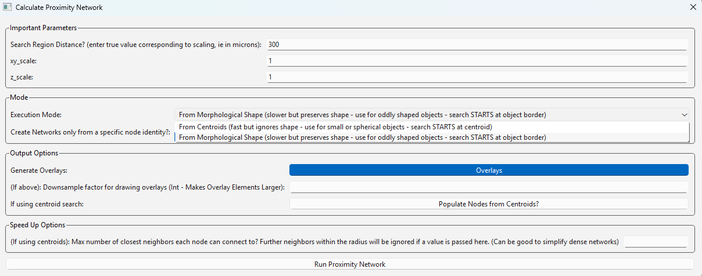
The proximity network menu. The search distance is set to 300, meaning nodes will look 300 pixels out for connections (corresponding to your scalings). Two search options are available in the dropdown next to ‘Execution Mode’: the first searches from centroids and works well with big data, as the data structure is far simpler; the second searches from object borders and is slower on large images by comparison. The second option is used here because these objects are heterogeneously sized. A number of nearest neighbors may be entered at the bottom instead of a search distance, or the two parameters may be combined to find a set number of neighbors within a specified distance. For more information on this algorithm, see Process → Calculate Network → Calculate Proximity Network
After execution:

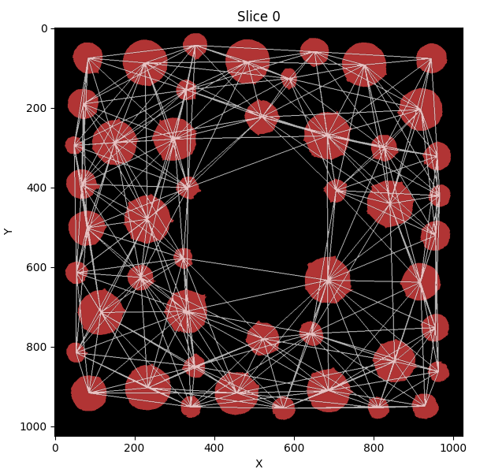

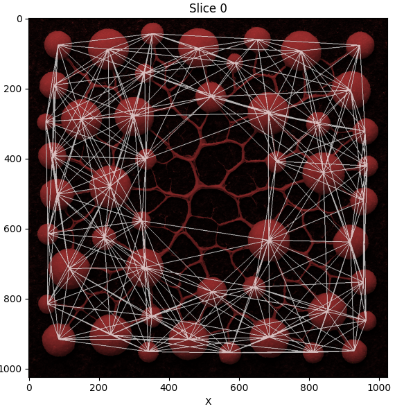
Proximity networks are a generic means of grouping objects in 3D space, well suited to tasks such as identifying cellular neighborhoods. Those neighborhoods can then be grouped into communities and analysed for composition.
Cellular Data — Modalities of Analysis
There are two primary approaches to analysing cellular data in NetTracer3D. Both begin with the same preparatory steps:
Segment your cells beforehand (for example in Cellpose) from a DAPI and/or membrane channel, or generate hexagonal nodes from the Generate menu.
Load the segmented cells into the nodes channel. Assemble the channels of interest into a folder, then use File → Images → Node Identities → Assign Node Identities from Overlap with Other Images. This calculates the average expression of each node across your channels — save the resulting spreadsheet. Thresholding is also used here to assign each node its channel identities.
Option 1 — spatial neighborhoods. Create a proximity network from cells bearing node identities; some number of nearest neighbors (20, for example) within a reasonable distance works well. Then use Analyze → Network → Create Communities Based on Node’s Immediate Neighbors to group cells according to recurrent neighbor patterns. This differs from the default community clustering from the network, which reveals spatial aggregates based on literal clumpiness in the tissue and may be inappropriate for dense cellular arrangements.
Analyze → Network → Calculate Community Composition… then shows what each community comprises. Many channels are needed for this to work well — the more channels, the more distinct the tissue regions that emerge. Below is the result of this community detection applied to a lymph node:

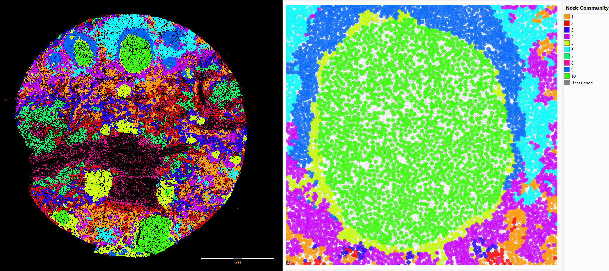
This approach is good for classifying tissue.
Option 2 — expression profiles. This uses the intensities spreadsheet created earlier. Select Analyze → Stats → Show Identity Violins… and locate the spreadsheet. In the menu that appears, find the clustering option and enter a number of communities to create based on the fluorescent expression profile of each cell. Keeping the intensity heatmap checked is recommended, as it shows what the resulting communities are composed of.

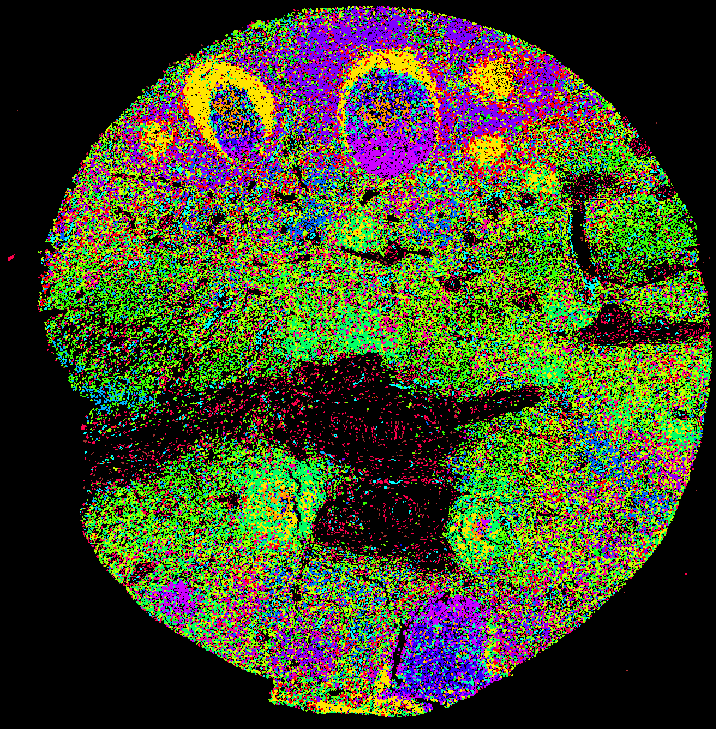
This approach is good for finding cell types.
Advanced Cellular Neighborhood Analysis — CODEX Walkthrough
Proximity networks make the best use of the node identities property, which allows groups of nodes to be lassoed into neighborhoods sharing local expression of similar cell types. Node identities can represent anything about a node — what it is, its qualities, and so on. They may be loaded directly from a spreadsheet (see Using the Spreadsheet Loader) or pulled from images.
Multiplexing, where a tissue is imaged repeatedly across many markers, is a particularly useful setting for this. The following CODEX dataset serves as an example, obtained from: Canela, V.H., Bowen, W.S., Ferreira, R.M. et al. A spatially anchored transcriptomic atlas of the human kidney papilla identifies significant immune injury in patients with stone disease. Nat Commun 14, 4140 (2023). https://doi.org/10.1038/s41467-023-38975-8
The image is of a renal papilla, stained here with DAPI (nuclei):

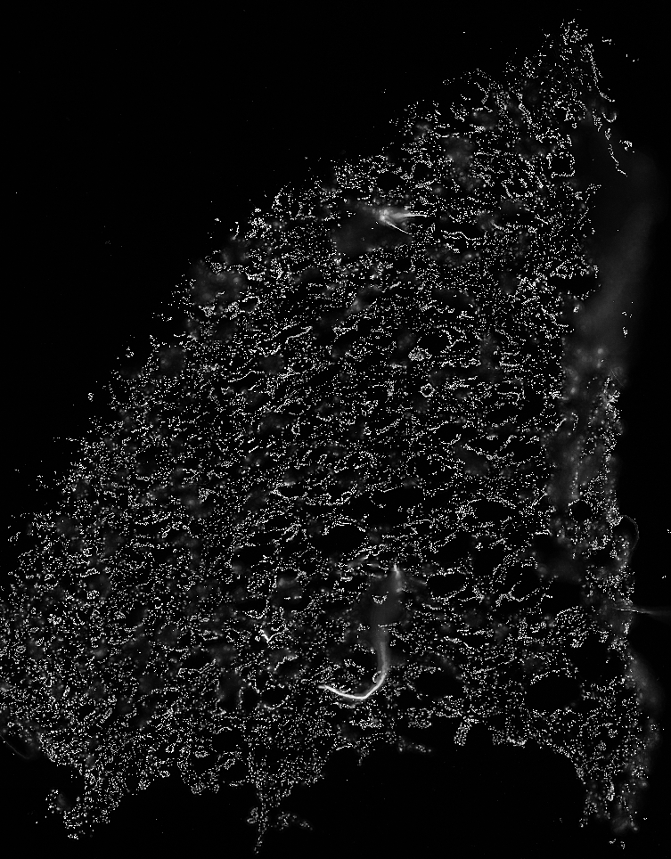
Obtaining anchor nodes
Several options exist for getting multiple channels into the same set of nodes. The first is to merge the nodes directly with File → Images → Node Identities → Merge Labeled Images into Nodes. Where segmentations of separate objects already exist (different cells or different FTUs), this pulls them into NetTracer3D as different identities. It does not work when the nodes in each channel sit on top of one another — the same cell with a different marker — or when segmenting each is too burdensome.
We therefore use the second option, File → Images → Node Identities → Assign Node Identities From Overlap With Other Images, which is designed specifically for CODEX-type images. It takes a primary segmentation of all nodes, typically from a DAPI stain, and assigns each node an identity based on which labeled markers from the other channels the node overlaps.
This first requires an initial set of segmented nodes to act as anchors, usually obtained by segmenting the DAPI channel. NetTracer3D’s binary ML segmenter can be used as in the previous example, followed by direct labeling if the cells do not overlap, or binary watershedding if they do. A third option is to segment out the background with the intensity thresholder and use gray-watershedding to split the foreground into labeled nodes. See All Process Menu Options for explanations of each.
These options suit certain data types and give quick results, but dedicated tools segment cells with higher specificity. One such tool is Cellpose3: Stringer, C., Pachitariu, M. Cellpose3: one-click image restoration for improved cellular segmentation. Nat Methods 22, 592–599 (2025). https://doi.org/10.1038/s41592-025-02595-5
Cellpose3 can be bundled into the NetTracer3D package, though GPU use is effectively mandatory. For the most accurate results, segment clustered nuclei with a user-trained model in Cellpose3:

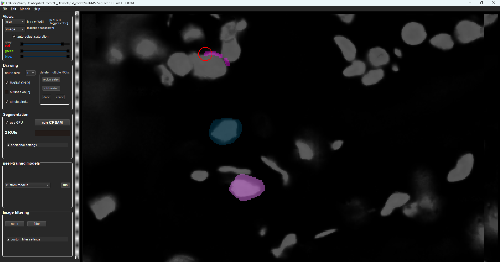
See https://cellpose.readthedocs.io/en/latest/ for instructions on installing and using Cellpose.
If segmenting cells is not possible or not desired, artificial hexagonal nodes can be generated from the Generate menu to partition the tissue similarly.

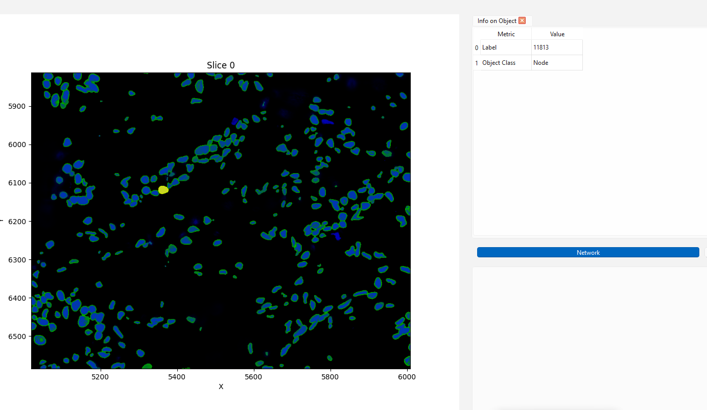
DAPI-segmented nuclei (green borders) over the original DAPI channel in NetTracer3D, with one selected in yellow.
Assigning identities from channels
However they are obtained, load the segmented DAPI nuclei into the nodes channel. A fast and error-robust route for the remaining channels is File → Images → Node Identities → Assign Node Identities From Overlap With Other Images with Manual selected as the binarization strategy.
First place all channels of interest into a folder as separate .tif/.tiff
images; ImageJ can easily split channels saved as a stack. For this mode the
channels should be raw rather than segmented. Then set the following options and
select your folder:

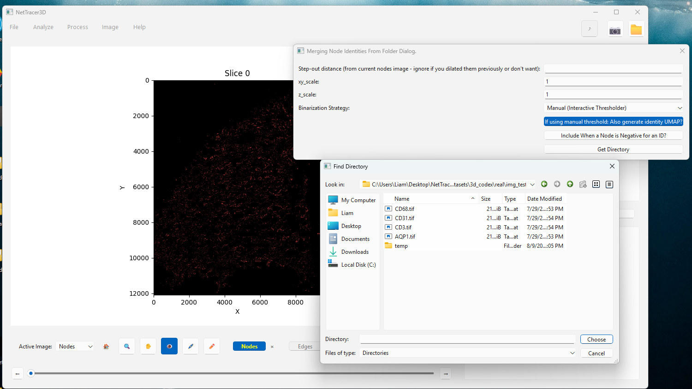
The step-out distance parameter optionally makes each cell consider a wider area, accounting for staining beyond the nuclei. This can be skipped if membranes were segmented or the behaviour is not wanted.
NetTracer3D evaluates each cell for the average intensity it expresses in each channel. You are then prompted to threshold each image manually, indicating which subset of cells should receive that identity based on their relative intensities. The example below uses CD68, which stains macrophages:

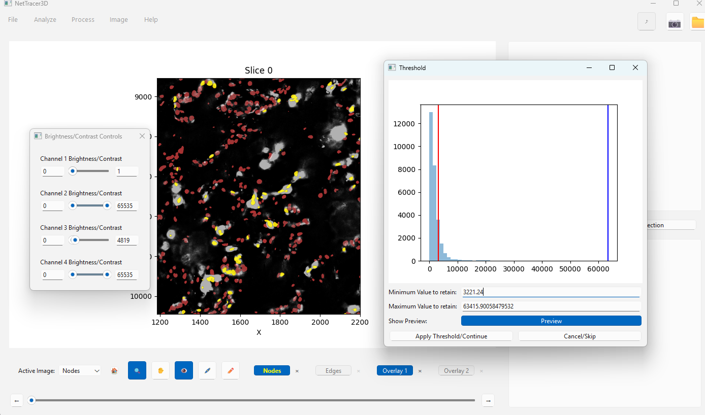
NetTracer3D’s image canvas remains interactive during thresholding. Nodes/cells stay in the Nodes channel while each channel being thresholded is temporarily rendered in Overlay1. Brightness/contrast controls make them more visible; the thresholder on the right then selects the cell nuclei that genuinely overlap with the channel data, highlighted in yellow. This repeats for every channel in the folder.
Once all channels are thresholded, the nodes are assigned identities as shown in the upper right table. If manual assignment was used and the UMAP option was selected at the start, a UMAP is also produced comparing the Z-score of each marker across the cells pulled out for identity assignment.

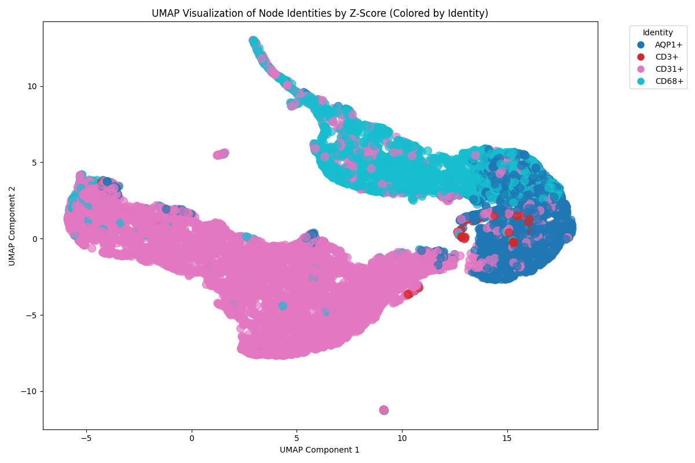
The UMAP adds an extra processing step but is a reasonable validation option. If cells overlap where they should not, either the thresholding step or the image itself was poor.
Because the mean intensity of each node is considered with the user in the loop — rather than auto-assigning based on overlap with a channel’s segmented foreground — this method guards effectively against phenotyping errors.


Grouping Cells By Neighborhood
Moving beyond marker-based analysis, NetTracer3D’s spatial capabilities can be evaluated over a broader set of markers. The system is primarily designed around the user-in-the-loop per-channel thresholder, but more nuanced segmentations can be brought in through auto-assignment: pre-binarized channels where the foreground is already segmented, a neural network (which can be trained during manual thresholding and reused), or reapplication of previous threshold settings.
Calculate a proximity network again — here with a search region limit of 100 microns and the nearest 20 neighbors within that area. Although not used here, Create Networks only from a specific node identity restricts connections to originate from a given identity, allowing highly specific analysis.

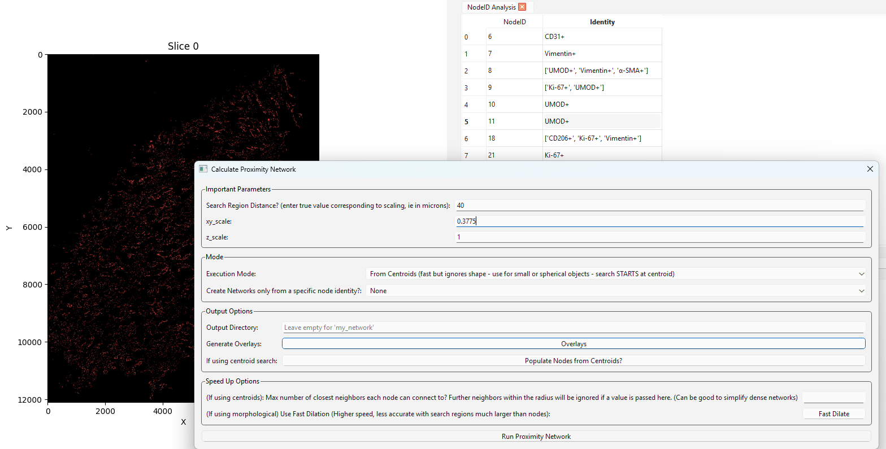
Centroids are used for this proximity network, which is acceptable when objects are circuloid or cuboid. Centroids can be obtained with ‘Process → Calculate Network → Calculate Centroids’; if they do not exist when the network is run, NetTracer3D prompts to calculate them. The Calculate Centroids window is here set to ‘Skip ID-less centroids’, excluding centroids for nodes without an assigned identity and excluding those nodes from the network. Leave this option off to retain ID-less nodes, for instance to represent tissue architecture. ‘Process → Modify Network/Properties’ can remove centroids lacking identities later.
The network itself:

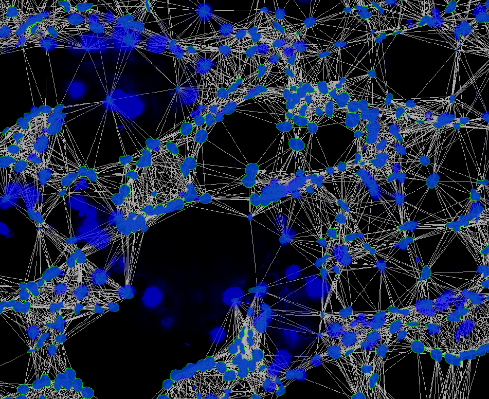
To cluster nodes by their network participation, use Analyze → Network → Create Communities Based on Node’s Immediate Neighbors…:

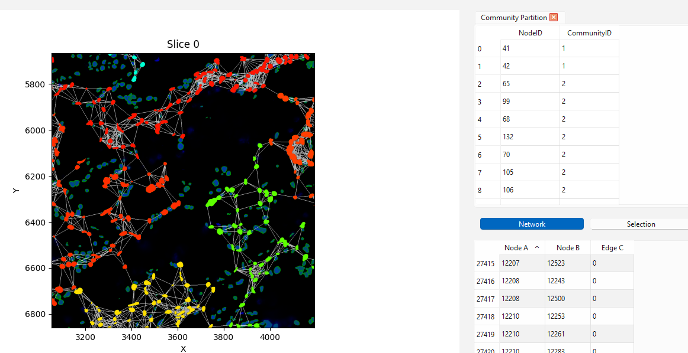
Nodes assigned a community position based on network involvement via the Louvain algorithm. For proximity networks this groups nodes by spatial relationship. The colored overlay is produced with ‘Analyze → Data/Overlays → Code Communities’.
Analyze → Network → Calculate Community Composition then shows the relative composition of each community or neighborhood, including heatmaps such as this:

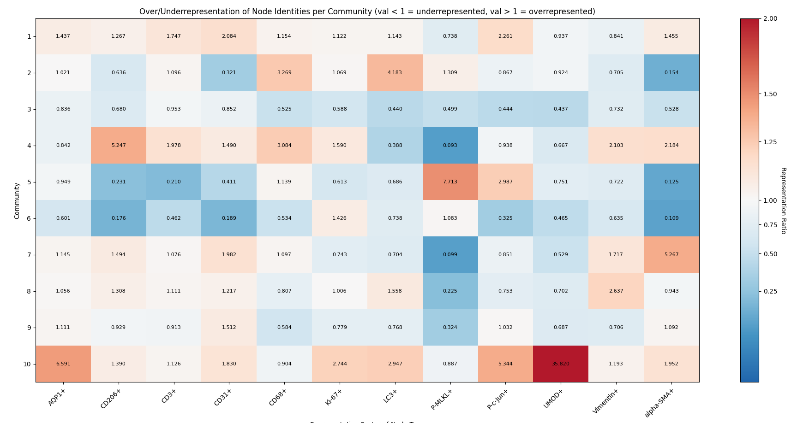
This graph shows the log-normalized over- and under-expression of each label in a community. Values greater than one (red) are over-represented in that community; values less than one (blue) are under-represented.
Communities can also be assigned from the network itself, though this is less specific for cellular datasets and better suited to finding spatial aggregates of objects. If network communities are used and similarity clustering is wanted, Analyze → Network → Convert Network into Supercommunities converts them into supercommunities — bearing in mind that this reports something entirely different from the cellular analysis pipeline recommended above.
Optional — Reassigning Node Identities for Tailored Analysis
After identities are assigned, nodes carrying multiple identities may warrant reassignment to their own class — a group of markers may represent a distinct cell type, and since co-expression of markers is common, this yields more specific categories (T-cell rather than lymphocyte). This supports more targeted downstream analysis on a single cell class, such as building proximity networks from that class alone to evaluate what tends to appear around it.
The simplest route is Process → Modify Network/Properties → Change/Remove Identities.

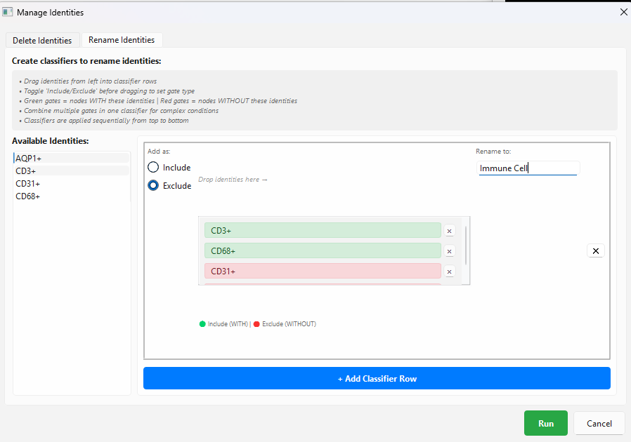
Drag the identities the renamed nodes should carry from the left into the middle with ‘Include’ enabled. ‘Exclude’ instead finds only nodes lacking that identity. Assign a new name on the right and choose ‘Run’.
Alternatively, nodes may already carry identities assigned in another program such as QuPath. In either case, the node identity information needs to be in a spreadsheet — right click the upper right table to save the node identities spreadsheet. File → Load → Load From Excel Helper then reassigns the identities and pulls them back into NetTracer3D:

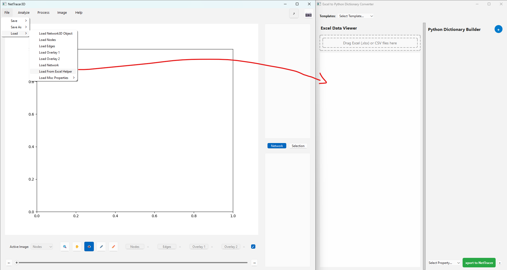

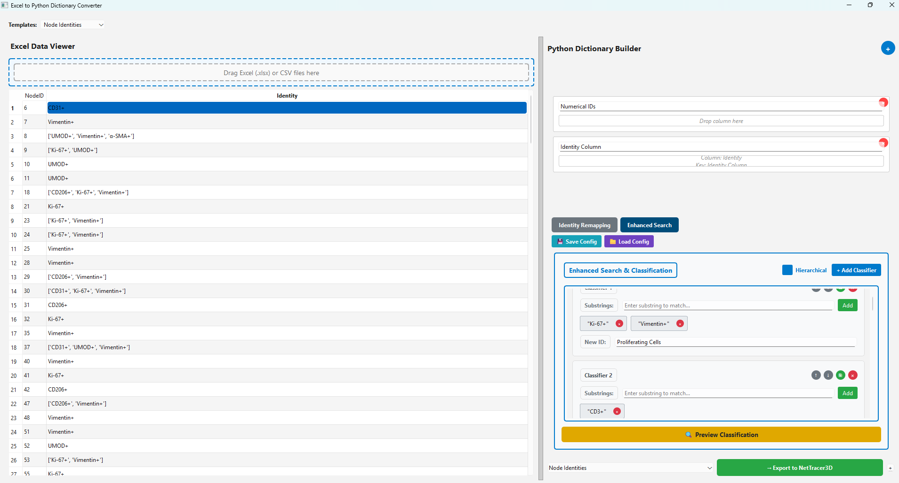
Here NetTracer3D is told to reassign anything containing the terms ‘Ki-67+’ and ‘Vimentin+’ to the identity ‘Proliferating Cells’.

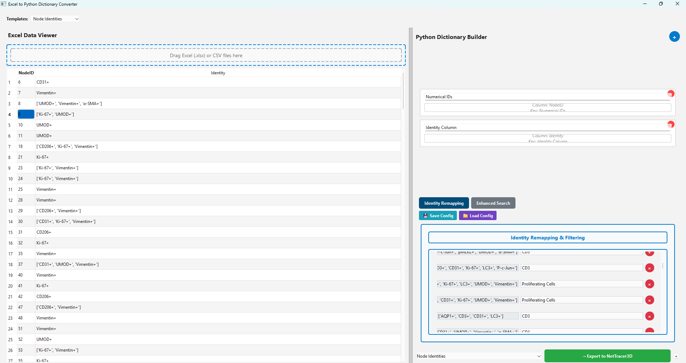
Pressing ‘Preview Classification’ assigns all combinations of identities containing the configured string classifications to their new ID. The green ‘Export’ button then sends this data into NetTracer3D’s main window. See Using the Spreadsheet Loader for more information on using this tool.
If multiple identities per node are unwanted and the excel loader is more effort than desired, Process → Modify Network/Properties → Force Any Multiple IDs to Pick a Single Random ID forces each multiple-ID node to randomly adopt one of its sub-identities. The result with all cells forced to a single identity is shown below. This step is unnecessary for most analytical functions, but the visualization functions work better with fewer identity groups.

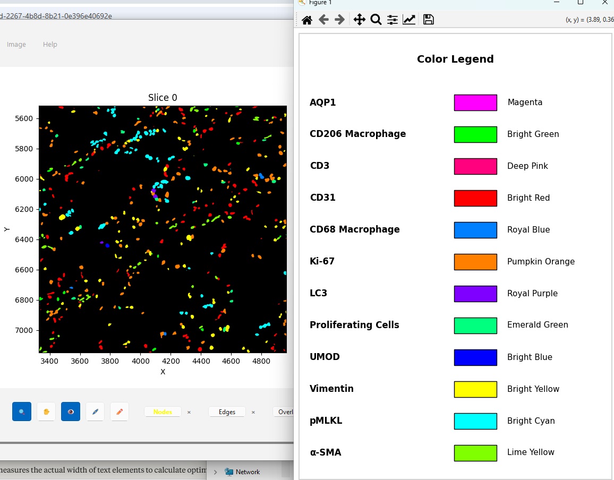
This overlay is produced with ‘Analyze → Data/Overlays → Code Identities’.
Next Steps
Once you are comfortable generating the default network types, proceed to Labeling Branches and Branch Networks to learn about labeling branches of objects and creating branch networks.